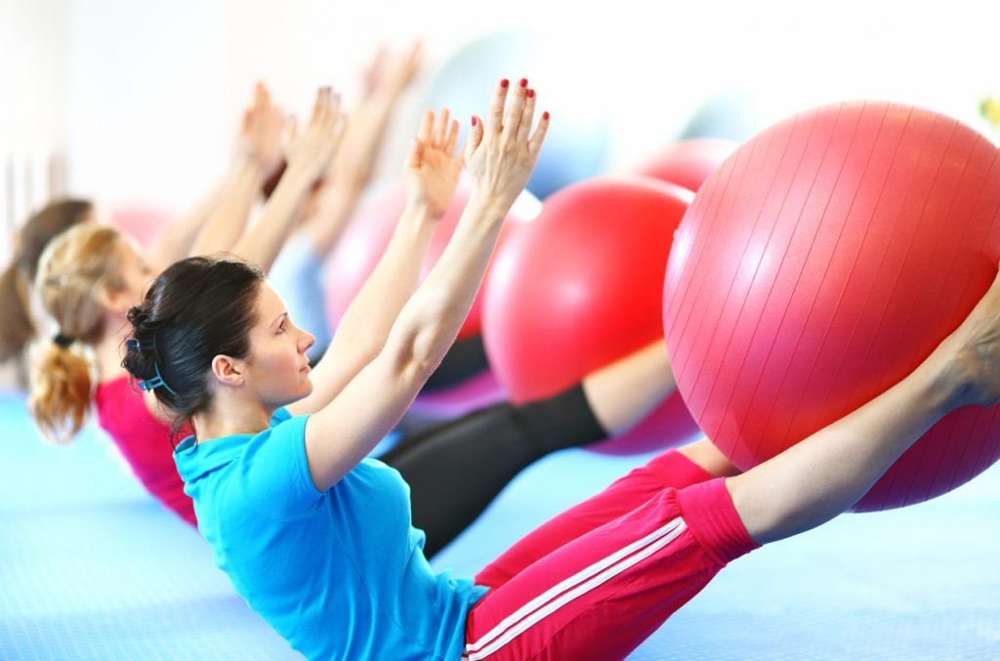

AGENDE SUA CONSULTA
FISIOTERAPIA ESPORTIVA

A Fisioterapia Esportiva é uma especialidade da Fisioterapia que trabalha em prol da prevenção e
tratamento das possíveis lesões associadas à prática de esportes e atividades físicas.
Beneficios:
-Otimizar a sua força, flexibilidade e resistência.
-Reduzir a sua dor.
-Restaurar o seu movimento articular.
-Aumentar a sua força muscular.
-Melhorar a sua coordenação.
-Melhorar o seu equilíbrio.
MAIS INFORMAÇÕES
MARQUE SUA CONSULTA
FISOTERAPIA EM IDOSOS

O objetivo da fisoterapa no idosos é de garantir o bem-estar e a qualidade de vida na terceira
idade. O processo de envelhecimento traz muitas mudanças e nem sempre é fácil se adaptar a elas,
por isso os exercícios apresentados na prática podem ser ótimos aliados.
Beneficoos:
-Melhorar o equilíbrio e a coordenação. br
-Diminuir as dores.
-Manter e garantir a força.
-Promover a independência.
MAIS INFORMAÇÕES MARQUE SUA CONSULTA
PILATES
O pilates é uma atividade física que trabalha com movimentos suaves e contínuos, enfatizando a
concentração, o fortalecimento e a estabilização dos músculos centrais do corpo, também chamado de
core (abdômen, coluna e pelve).
Os exercícios misturam treino de força e de flexibilidade que ajudam, principalmente, a melhorar a
postura, alongar e tonificar os músculos. Além disso, a técnica aprimora o contorno corporal,
melhora os tônus e o equilíbrio.
MAIS INFORMAÇÕES MARQUE SUA CONSULTA
LIBERAÇÃO MICROFACIAL
A liberação miofascial é uma terapia manual que previne lesões e alivia dores musculares. O método é
utilizado na fisioterapia com aparelhos específicos ou somente com as mãos, pressionando pontos
específicos do corpo a fim de liberar o tecido fibroso que reveste os músculos, chamado fáscia.
Beneficios;
-Aumentar a mobilidade articular e a consciência corporal.
-Favorecer a execução dos movimentos.
-Liberar e ativar os músculos.
-Preparar a musculatura que será trabalhada.
-Melhorar a circulação e respiração.
MAIS INFORMAÇÕES MARQUE SUA CONSULTA